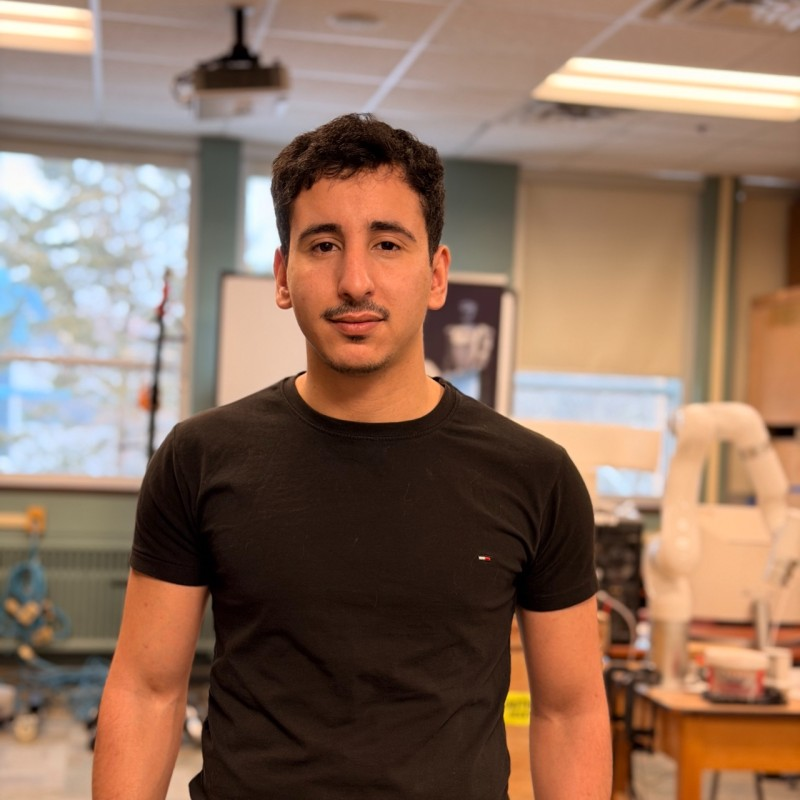

Chercheur en IA (M. Sc.) · Université de Moncton
|
Je développe des modèles d'apprentissage profond génératifs et quantiques pour l'imagerie médicale, et je transforme la recherche en outils qui aident les cliniciens à y voir plus clair.

Chercheur en IA, je poursuis une maîtrise avec mémoire en informatique (spécialisation en intelligence artificielle) à l'Université de Moncton, où j'ai également donné le cours d'analyse de données aux cycles supérieurs. Titulaire d'un diplôme d'ingénieur d'État en science des données et intelligence artificielle de l'ENSA Safi, j'aime mettre la technologie au service de problèmes concrets. Ma solide formation en informatique, en mathématiques et en statistique me permet d'aborder chaque projet sous un angle à la fois analytique et pratique.
Mon travail consiste à développer et à évaluer des modèles d'apprentissage automatique, à gérer les données et à assurer des résultats fiables et efficaces. J'accorde une grande importance à la clarté, à la rigueur et à l'apprentissage continu dans tout ce que j'entreprends.
Au laboratoire PRIME, mes recherches portent sur l'IA générative pour l'imagerie médicale (VAE, GAN et modèles hybrides VAE-GAN pour la segmentation et la génération de données synthétiques) ainsi que sur l'apprentissage automatique quantique pour la classification d'images médicales.
Modèles VAE, GAN et hybrides VAE-GAN pour la segmentation d'images médicales et l'augmentation de données par synthèse.
Navigation autonome avec ROS 2 et Nav2, et commande de bras robotisés pour l'automatisation en conditions réelles.
Recherche et développement d'applications de l'informatique quantique pour la classification et l'analyse d'images médicales.
Application de techniques d'apprentissage automatique à l'analyse du trafic réseau et à la détection des menaces.
Conception de réseaux de neurones et de modèles avancés pour la classification d'images, le traitement automatique du langage naturel et plus encore.
Publication d'articles scientifiques et contribution à l'avancement de l'IA et de l'apprentissage automatique.
Un VAE-GAN conditionnel guidé par le partitionnement flou des C-moyennes (fuzzy C-means) pour la segmentation des polypes, publié dans Sensors (2026).
Lire l'articleIntégration de l'informatique quantique et de l'apprentissage automatique pour la classification d'images médicales au laboratoire PRIME de l'Université de Moncton.
En savoir plusRésultats de pointe en classification du trafic réseau pour des applications de cybersécurité, grâce à l'apprentissage ensembliste.
Voir l'article7 articles scientifiques (4 articles de revue et 3 articles de conférence) en IA générative, en apprentissage automatique quantique, en imagerie médicale, en optimisation et en cybersécurité.
Voir toutes les publicationsArticles techniques sur la science des données et l'apprentissage automatique publiés sur Medium : moissonnage du Web, arbres de décision et plus encore.
Voir tous les billets